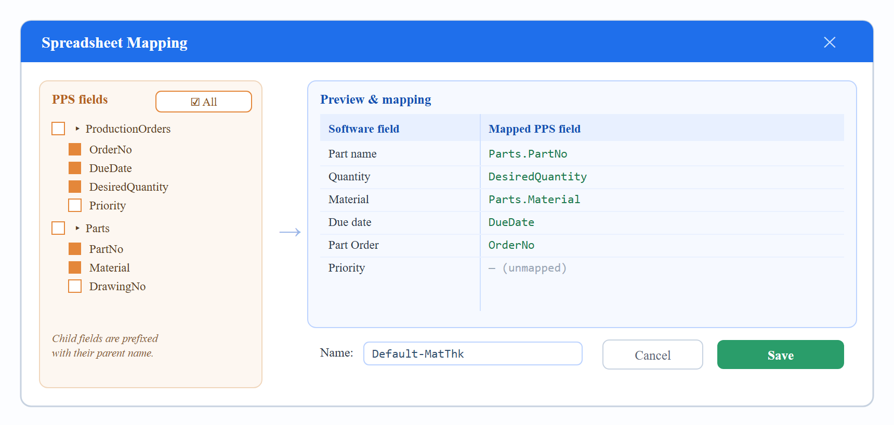
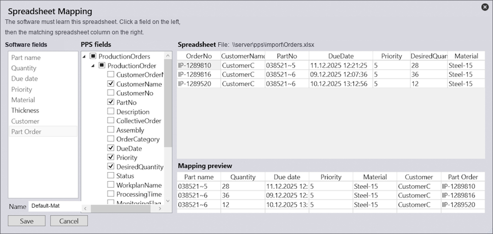
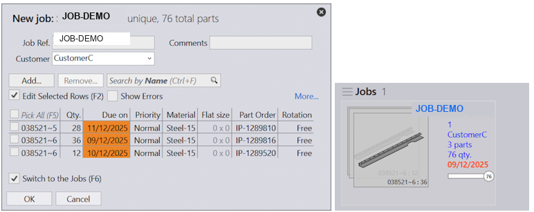
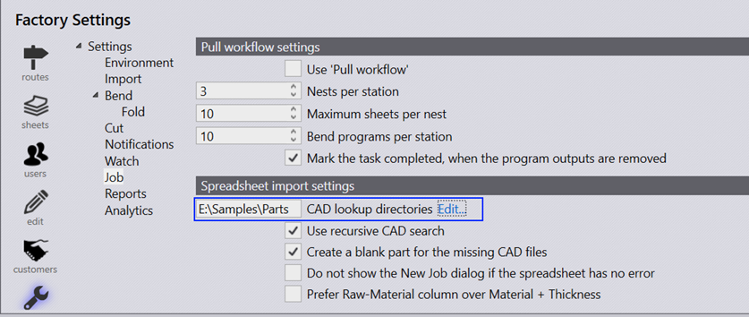
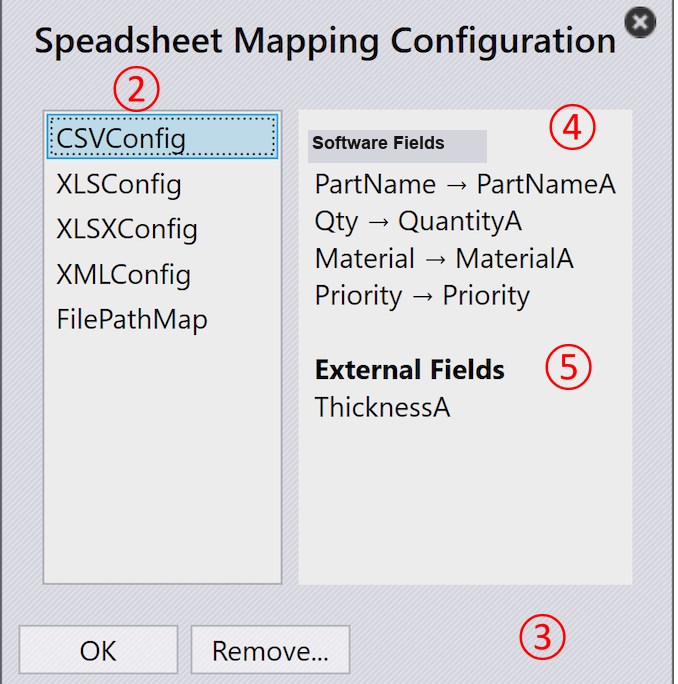
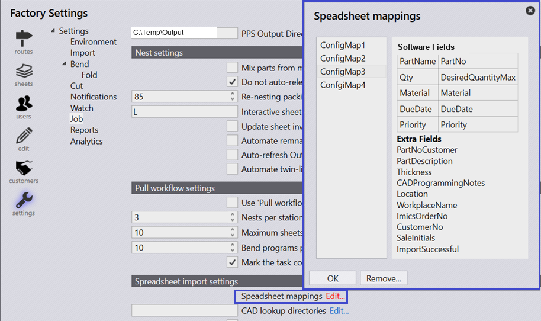

Field Mapping (Spreadsheet Mapping)
Because incoming files can differ in structure, the operator defines a mapping between the file’s fields and the production software’s own fields, then saves it under a name for reuse.
6.1 The Spreadsheet Mapping dialog
When a supported file (.csv, .xls, .xlsx, .xml) is imported for the first time, the Spreadsheet Mapping window opens. It has two main panes: a PPS-fields pane listing the fields found in the incoming file (each with a checkbox), and a spreadsheet / preview pane showing the selected fields mapped to the software’s fields.


6.2 Internal target fields
The software’s own importable fields — the left column of the mapping — are:
| Software field | Type | Required? | Notes |
|---|---|---|---|
Part name |
Text |
Required |
Also used to locate the CAD file. |
Quantity |
Number |
Required |
Order / assembly quantity. |
Material |
Text |
Required |
Part material or raw-material name. If a raw-material name is mapped, the separate Thickness mapping is ignored. |
Thickness |
Number |
Optional |
Needed only when Material holds a material name (not a raw-material name). |
Due date |
DateTime |
Optional |
Defaults to today + 3 days when absent. Ignored for parts/assemblies. |
Priority |
Text |
Optional |
One of Low, Normal, High, Urgent. |
Part Order |
Text |
Optional |
ERP order number. If unmapped/empty, an internal part-order number is generated. |
6.3 Creating, saving and reusing a mapping
-
Drop the file into the application. The mapping dialog opens with all PPS fields preselected and a live preview.
-
Use the PPS-field checkboxes (or the All toggle) to select the fields you need. The preview updates as you toggle.
-
Map a software field to a PPS field (select the software field, then its corresponding PPS field — or drag the PPS field onto it). Double-click a mapped software field to remove the mapping.
-
Enter a Name and click Save. The mapping is stored in the shared repository and synchronized to all workstations.
-
The mapped values populate the New Job dialog; confirm to import as a job. Alternatively use the open → import-orders command to import as orders instead of a job.
|
Tip
|
Reuse & edit. On later imports of a similar file the saved mapping is applied automatically and the dialog does not reappear. To edit a saved mapping, hold Ctrl while dropping the file to reopen it. Do not click Cancel after editing — cancelling discards the changes. |

6.4 Parent / child fields and prefixing
PPS fields form a hierarchy (e.g. a parent ProductionOrders or Parts containing child attributes). Because the same child name can appear under different parents, each child is shown prefixed with its parent in the spreadsheet pane — e.g. ProductionOrders.CustomerNo — to remove ambiguity. Unchecking a parent cascades to its children, and the All option toggles the whole tree. The checked/unchecked state of each field is persisted when the mapping is reopened.
6.5 Unmapped fields → Extra Fields
Fields that are selected but not mapped to a software field can still be imported as Extra Fields (formerly “External Fields”) when the option “Export the selected unmapped PPS fields as extended properties” is enabled. These are stateless pass-through values — carried through and shown on the Job-item and Part detail pages, and usable for filtering — but they are not treated as part of a part’s identity. If the option is off, unmapped fields do not appear in Extra Fields.
6.6 CAD / drawing resolution
During import the software also uploads the referenced part. It finds the CAD file by:
-
Looking in the same directory as the import file, matched on the Part-name field; then
-
Searching the configured CAD lookup directories (Factory → Settings → Job → Spreadsheet-import settings). Several directories may be listed, and a recursive sub-directory search can be enabled.

6.7 Format differences
| Aspect | XML | CSV | XLS / XLSX |
|---|---|---|---|
Shape |
Hierarchical; flattened to an intermediate CSV for mapping |
Flat, delimited |
Flat, tabular |
Duplicate columns |
n/a |
Rejected with an error |
Should be rejected the same way |
Parent/child prefixing |
Yes (from element nesting) |
n/a |
n/a |

6.8 Managing saved mappings
Saved mappings (“styles”) are managed under Factory → Settings → Job → Spreadsheet-import settings → Spreadsheet mappings. There the operator can view the stored styles and the fields each one contains, and delete obsolete ones (deletion is confirmed via a warning). Typical examples: a style Default-MatThk (Part name · Qty · Priority · Customer · Material · Thickness) and a shorter Default-Mat (without Thickness).
